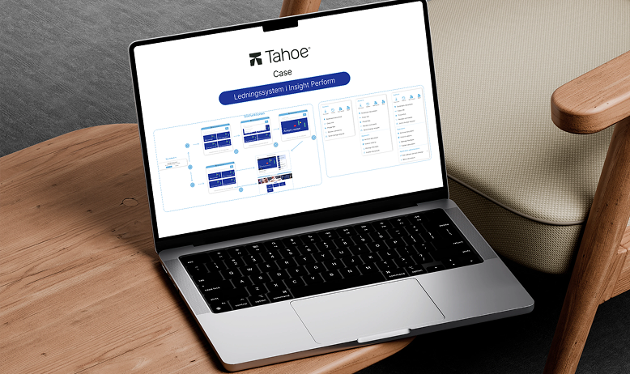
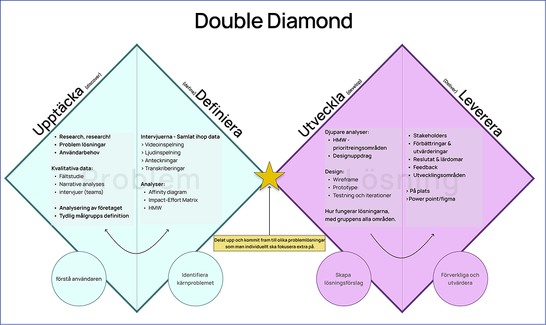
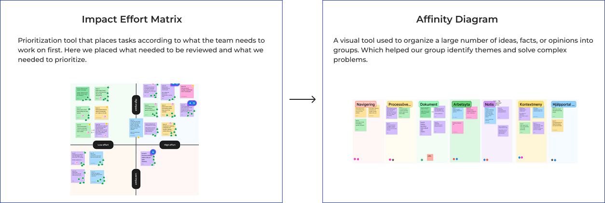
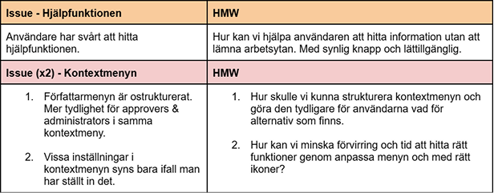
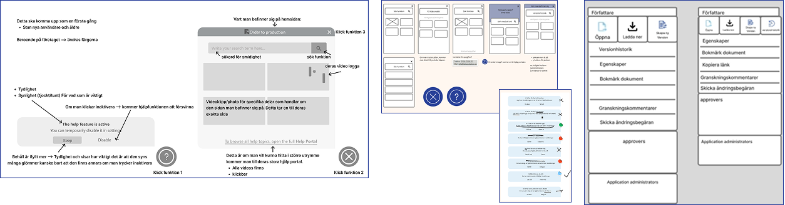
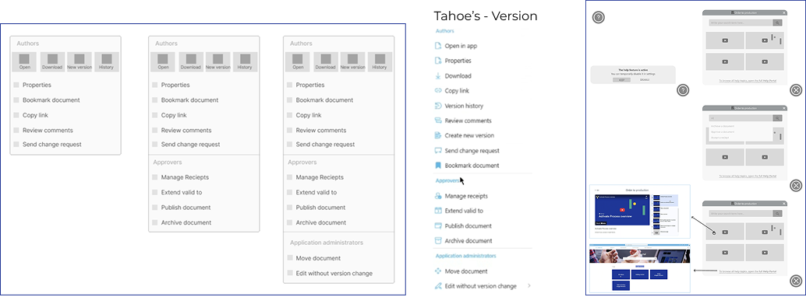
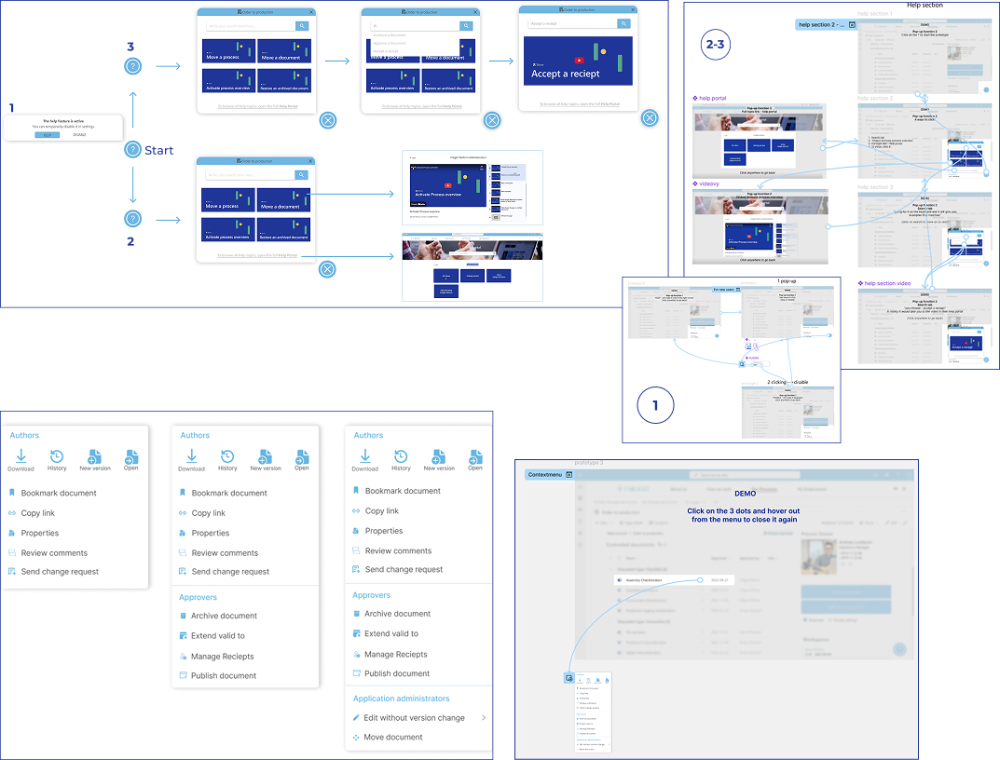
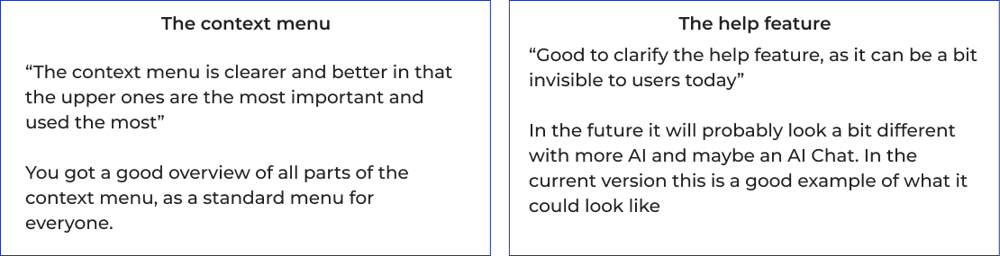

TAHOE SOLUTION
Insight Perform
A management system that offers a digital workplace for all types of companies and industries
Background
In collaboration with our partner Tahoe Solutions, we worked on a case called Personas in Perfom . Tahoe develops management systems and intranets that are a safe and efficient digital workplace for different types of companies. In this case, we were given access to their management system, Insight Perform, which has been around for over 10 years.
Goals
- Understand how users experience the system's flow and navigation.
- Identify strenghts, pain points, and areas for improvement in the user interface.
- Generate insights and recommendations that can contribute to a better user experience.
- Reduce the need for support and simplify the sales process through a more intuitive UI.
Challenges
Find users within the company's area, where we collected data through field studies and digital meetings. We used a lot of qualitative data and no quantitative studies because we were based on their assumptions, to ensure that the information was within the companies' boundaries and conditions.
The design Process
In order to begin the individual work, we first needed to collect basic information, insights from data collection and data analysis based on the employees' perspectives within the project's internal framework.
Here I used my first Double diamond. The model (see image) was created to clarify the project's structure and work process, as well as to get a picture of how we moved from start to delivery.
Through the processes, we identified the users' real needs and carried out many iterations, in order to be able to approach a clear direction for the work. The research that was done was carried out based on qualitative methods, since the quantitative methods were about generalized results to a larger population.


Through our affinity diagram, where we selected categories that had specific focus areas that needed to be reviewed, I chose to focus on the help function and context menu. From this, I formulated a How Might We (HMW) to begin the work.

Results
Low-fiedlity-prototyp
Help function
The first thing I researched was how the help feature pop-up would work and how users could quickly find information using a help button.
I created several tests and different suggestions for how a help function could be designed, as well as what would be reasonable for a pop-up solution that is used effectively by many companies today. I took inspiration from different solutions to investigate how Tahoe's site could be presented.
Context menu
The work on the context menu focused primarily on what users used most and how it could include the most important parts at the top. At the same time, the design needed to accommodate all menu options and categories and provide space for more menu options if they were added in the future.
The most important thing to remember during the process was that users themselves could customize what was shown in the context menu trough settings. However, the priority was to include the most important and most used ones, since it was not common for users to change things themselves.

Mid-fidelity prototype
Help function
I explored ways to improve and make the help feature more visible and clear for both new and experienced users, to remind them that help was available. My work also focused on what happened when the user clicked through the pop-up feature.
Developed a deeper understanding of how the help function would work, especially when using the search function. I investigated what results could appear and what could happen if the user navigated further, by opening a video clip or getting general help with other things on their website via their portal.
Context menu
I started working towards a clearer structure and user needs that needed to be prioritized, to get quick access to the most important areas. Because users didn't always understand that they could change their menu choices and thought it would be good to have a standard context menu.
The idea behind a standard menu was that the most important needs, which most often arose among users, would be easily accessible. Where the top four became standard buttons that the customer himself explained what was prioritized the most.

High-fidelity prototype
Help function
(On the first (1), it is described what the first pop-up function does in the low-fidelity prototype) Both functions have a main menu that knows which page of the website you are on.
(2)You can quickly get help by pressing one of the videos on the first page or clicking on the link thhat takes you to their main help portal page for general help.
(3) If the help function does not bring up the options you are looking for, you can search in the search field for a specific video you want to see.
Context menu
I continued working with the four most important buttons at the top and made all menu selections in alphabetical order. The context menu could look different depending on who had access to the website. This could make the overview look different.
The prototypes are more clearly visible when you open them, with the final design at the top of the case description.

Reflections & feedback
- Tought me how to research process worked.
- User research makes a big difference in understanding the users' perspectives.
- Challenged myself in qualitative methods and analyzing user insights.
- One must proceed from the contact person’s request in order to maintain ethical perspectives.
Feedback from customer & employees
